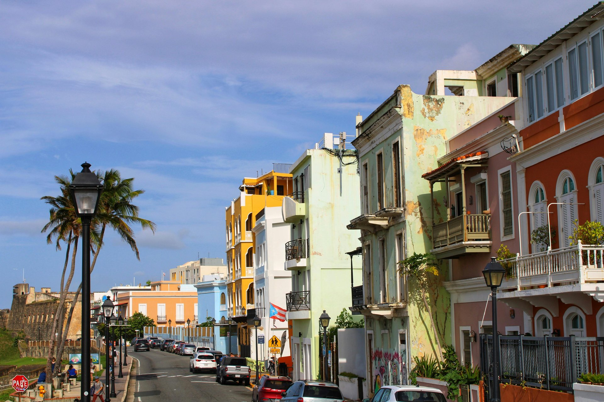

Caguana Indigenous Ceremonial Park: Taíno Legacy in the Hills

When the Spanish arrived in Puerto Rico in the late 15th century, they encountered a civilization with complex religious practices, architectural achievements, and a society organized around a ceremonial game. The Taíno — the indigenous people of Puerto Rico and much of the Greater Antilles — built ceremonial complexes called batey centers across the island, and the largest and most significant of those complexes still stands near the town of Utuado in Puerto Rico's mountainous interior: the Centro Ceremonial Indígena de Caguana.
What Is a Batey?
A batey is a ball court, but the word carries ceremonial and political meaning beyond sport. The game played on these courts — also called batey — used a solid rubber ball and strict rules prohibiting players from touching the ball with their hands or feet; only hips, shoulders, and torsos were permitted. The game had religious significance, potentially linked to cosmic cycles and agricultural fertility, and matches between villages or political groups could carry enormous social stakes. Spectators watched from along the edges of the courts, which were defined by upright stone slabs.
Caguana's Scale
The Caguana complex contains ten ball courts — bateyes — arranged across a broad clearing in the Río Grande de Arecibo valley, surrounded by mogote hills. The courts vary in size, with the largest being the principal ceremonial space. Lining the edges of the courts are monolithic stone slabs, many of them carved with petroglyphs: human figures, geometric patterns, animals, and faces that archaeologists believe represent ancestral spirits or deities in the Taíno cosmological system.
The site covers roughly 13 acres and is thought to have been the center of a regional chieftainship (cacicazgo) under the Taíno chief Guarionex, though direct historical records from the pre-contact period are limited. Archaeologists date the main construction phase to approximately 1200–1500 CE, making the complex several centuries old at the time of European contact.
The Petroglyphs
The monolithic stones at Caguana bear some of the most significant Taíno rock art in the Caribbean. One of the most famous petroglyphs, sometimes called the "dancing woman" figure, is reproduced widely in Puerto Rican cultural materials. Others show faces with the characteristic Taíno stylization — large circular eyes, defined brows, and simplified body forms. These stones were not purely decorative; they marked boundaries, honored ancestors, and communicated cosmological relationships that the Taíno understood through their visual language.
The Museum and Today's Site
The park includes a small museum with exhibits on Taíno culture, material remains from the site, and reproductions of objects that help contextualize what you see on the ground. The grounds are well-maintained and relatively shaded. The site is managed by Puerto Rico's Instituto de Cultura Puertorriqueña and charges a modest entrance fee. It is best visited as a half-day trip combined with the nearby Río Camuy caves or the karst landscape of the northwest interior.
Frequently Asked Questions
What is a batey? A Taíno ceremonial ball court. The game had religious and political significance and was played with a rubber ball that players could only strike with hips, shoulders, and torso.
How old is Caguana? The main ceremonial complex was built and used roughly between 1200 and 1500 CE.
Related Reading
Discover Puerto Rico's history on a guided tour
See Old San Juan Tours →